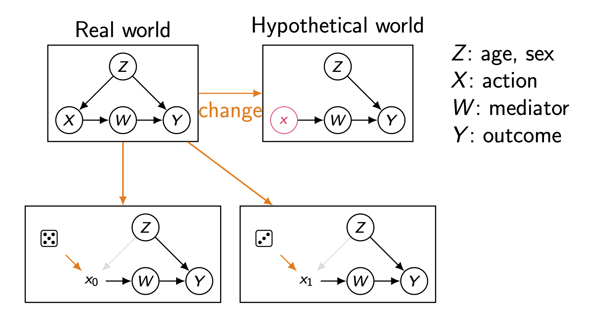
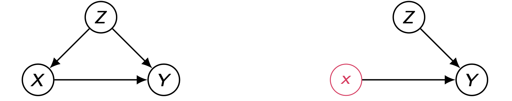
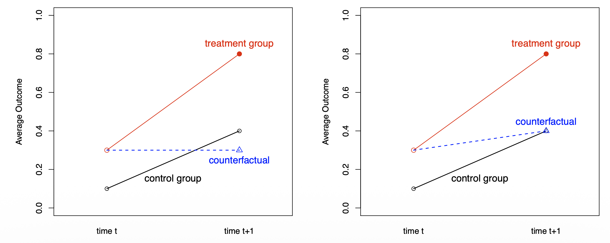
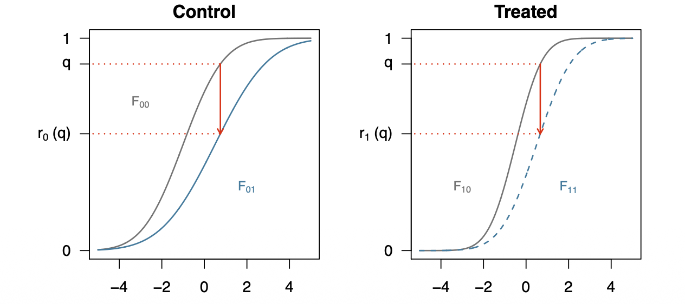
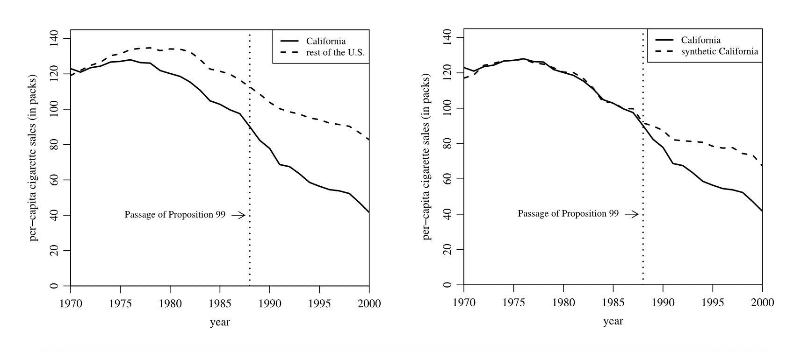

머신러닝이 머무는 ’연관’의 층에서 출발해, 개입과 반사실이라는 상위 층을 왜 데이터만으로는 건널 수 없는지를 Pearl의 인과 사다리로 정리합니다.
관측 데이터만으로는 옳은 정책을 학습할 수 없음을 보인 뒤, 구조적 인과 모델(SCM)과 그것이 유도하는 인과 다이어그램·마르코프 인수분해·d-분리까지 따라갑니다.

개입 분포를 하위 모형으로 정의한 뒤, 절단된 분해로 관측 분포에서 처치의 생성 메커니즘만 도려내고, Markovian 모형에서는 처치의 부모만 보정해도 인과 효과가 언제나 식별됨을 따라갑니다.

Confounding and Backdoor
Adjustment Criterion
The Causal Calculus
An Algorithmic Approach to Identification
Partial Identification
Linear Structural Causal Models
Potential Outcome Framework
Inverse Probability Weighting and Its Variants
Matching
Instrumental Variables
Regression Discontinuity Design

Difference in Differences

Nonlinear DiD

Synthetic Control Method
Differences in Differences & Synthetic Control Method
Causal Discovery
Causal Data Science
Mathematical Optimization
Convex Optimization
Some Standard Convex Sets
Operation That Preserve Convexity
Distributed Computing for Data Mining
MapReduce: Basics
MapReduce: Details
Overview
Operations
Implementations
Frequent Itemsets
Association Rules
Finding Frequent Pairs
A-Priori Algorithm
PCY Algorithm
Extensions of PCY
Limited-pass Algorithms
Finding Similar Items
Shingling
Minhashing
More on Minhashing
Locality-Sensitive Hashing
S-Curves
LSH Families
LSH with Other Distance Measures
Clustering
Hierarchical Clustering
K-means Clustering
CURE Algorithm
BFR Algorithm
BFR Algorithm: Process
GRGPF Algorithm
Dimensionality Reduction
Eigenvalues and Eigenpairs
Power Iteration
Principal Component Analysis
Singular Value Decomposition
Dimensionality Reduction with SVD
CUR Decomposition
Recommender Systems
Content-based Recommendation
Collaborative Filtering
The Netflix Challenge
UV Decomposition
UV Decomposition as Machine Learning
Variants of UV Decomposition
Dealing with Implicit Feedback
Link Analysis
Deep Learning
ML On Graphs
Time Series Forecasting
Mining Data Streams
Introduction
Loss Function and Backpropagation
Neural Networks
RNN, LSTM, Attention, Transformer
Tokenizer
MLP
Backpropagation
Attention
Transformers
Transformer Backward
Optimizer
Inference
Modern Transformers
Pytorch
Huggingface
Autoencoders and athe VAE Toolkit
Variational Autoencoders
Autoregressive Models and GANs
DDPM and Noise Prediction
Score-Based View and Modern Extensions
MDPs, Bellman Equations, and Dynamic Programming
Model-Free Value Learning and Deep Q-Learning
Policy Gradient and Actor-Critic Methods
Neural Network Pruning and LLM Compression
Linear Classifier
Feature Representation
Kernel Methods
Support Vector Machines
Generalization and Regularization
Perceptron & Neural Networks
Generative Learning Algorithms
Gradient Descent
Regression
Unsupervised Learning
Sequential Models
Reinforcement Learning
Non-Parametric Methods
Convex Analysis
Introduction to Convex Optimization
Linear Programming
Simplex Method for Linear Programming
Convex Optimization Beyond Linear Programming
Conic Duality
Introduction to Gradient Descent
Gradient Descent for Smooth Functions
Strongly Convex Functions
Accelerated and Projection-free Methods
Proximal Gradient Descent
Smooth Approximation of Nonsmooth Optimization
Moreau-Yosida Smoothing
Lagrangian Duality
Fenchel Duality and Dual Subgradient Methods
Dual gradient method for separable problems
Optimization with Functional Constraints
Fixed-Point Iteration
Douglas-Rachford Splitting and ADMM
Newton’s Method
Quasi-Newton methods
Barrier method
Primal-dual interior method
Introduction to Integer Programming
Causal Inference에서 불확실성을 다루는 새로운 프레임워크: Conformal Prediction과 Meta-learner의 결합
VAE와 GNN을 결합하여 비선형 관계와 다양한 데이터 타입을 포괄하는 새로운 DAG 구조 학습 프레임워크 제안
Philadelphia Beverage Tax 사례를 중심으로: 간섭 하에서의 이중 강건 DiD 추정 방법론
선형 모형과 OLS를 전제로 얻어졌던 Henckel et al.(2019)의 최적 조정집합 기준이 비모수 인과 그래프 모형과 비모수 추정량에서도 그대로 성립함을 증명하고, 최소 조정집합 중 최적인 O_min, 시간의존 조정집합의 비교 기준, 그리고 최적 조정 추정량이 준모수 효율적인지를 판정하는 건전·완전 그래프 기준을 정리합니다.
잠재변수가 있는 인과 그래프에서 동적 처치 요법의 정책값을 추정할 때, 조정집합 선택 문제를 무향 그래프의 정점 절단(vertex cut) 문제로 환원하고, 최소 절단들이 이루는 격자(lattice) 구조를 통해 전역 최적·최적 minimal·최적 minimum 조정집합의 존재성과 다항시간 계산 알고리즘을 얻는 과정을 정리합니다.
NeurIPS 2018: Time-dependent confounding 해결을 위한 Deep Learning 기반의 RMSN 모델 소개
국소 정보만으로 인과효과의 식별 가능성을 판정하고, 처치의 가능한 후손을 제거한 변형 금지 사영에서 결과의 부모를 읽어 최적 조정집합을 복원하는 건전하고 완전한 국소 인과 발견 알고리즘 LOAD를 정리합니다.
잠재변수와 선택 편향이 동시에 존재하는 상황에서 목표 변수 T의 직접 원인·직접 결과만을 복원하기 위해, MB+(T)라는 국소 영역을 경계로 삼고 그 안에서 학습한 인접성·충돌자 정보 중 전역 PAG와 일치가 보장되는 부분만 골라 쌓아 올리는 LoCaLS 알고리즘을 정리합니다.
유효 조정집합이 존재한다면 반드시 MB(X) 안에도 하나 존재한다는 국소 경계 정리를 세우고, 세 개의 국소 식별 규칙(R1–R3)만으로 사전처치·인과충분성 가정 없이 건전(sound)하고 완전(complete)한 조정집합 탐색을 달성한 LCS 알고리즘을 정리합니다.
종단적 데이터에서 시간에 따라 변화하는 치료 및 조절변수의 인과적 효과 분석
사전분포에서 샘플링만 가능하면, 트랜스포머가 단일 순전파(forward pass)로 사후예측분포(PPD)를 근사하도록 학습시킬 수 있음을 보인 PFN 논문 정리
고정 처치(Fixed Treatment)를 넘어 시변 처치(Time-Varying Treatment)의 인과 효과를 정의하는 방법과 표기법(History Notation)에 대한 정리
시변 교란요인과 처치 간의 피드백 루프가 형성될 때 발생하는 인과추론의 구조적 문제
시변 처리와 교란요인 피드백 상황에서의 인과 효과 추정
Target Trial Emulation
Hernán & Robins Chapter 23